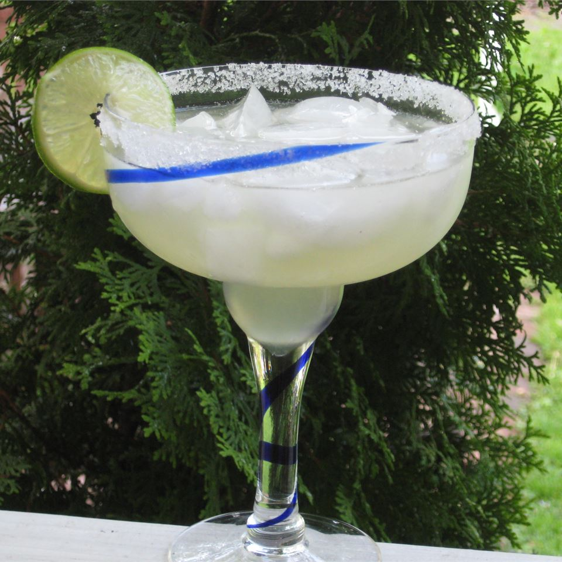

Parker's Famous Margaritas

Description
This is the signature drink at my in-law's home.
My father-in-law developed a taste for margaritas
made from scratch during the summer they spent in
Zihuatanejo during the 1960s. After decades of
tinkering he has arrived at this foolproof recipe
for the ultimate Mexican cocktail.
183 calories; protein 0.1g; carbohydrates 14.9g;
fat 0.1g; cholesterol 0mg; sodium 2.3mg
Ingredients
- 5 fluid ounces tequila
- 3 fluid ounces fresh lime juice
- 1 fluid ounce sweetended lime juice
- 3 fluid ounces triple sec (orange-flavored liqueur)
- ice cubes
- 1 lime, cut into wedges
- rimming salt
Directions
- Measure the tequila, lime juice, sweetened lime juice
and triple sec into a cocktail shaker and add a generous
scoop of ice. Cover and shake until the shaker is frosty,
about 30 seconds.
- Rub a lime wedge around the rim of a margarita glass and
dip in salt. Fill each glass with ice. Strain equal amounts
of the cocktail into the glasses to serve. Garnish with a
lime wedge.